← Back to Microbiologic Studies & Biopsies Lab & Diagnostic Tests home LAB & DIAGNOSTIC TESTS · VISUAL ATLAS
See the specimen. Find the location. Recognize the equipment. 25 illustrated sheets for the 25 named tests on your microbiology and biopsy page. Search for a test, or choose a group. Open any picture to enlarge it.
Bone marrow focus: prone position → aspiration or core sample → pressure dressing and bleeding checks.
Educational illustrations, not actual patient photographs or diagnostic images. Read these alongside your course notes.
25 picture sheets
All pictures are shown below. Search requires JavaScript.
Biopsies
Bone marrow: position and site
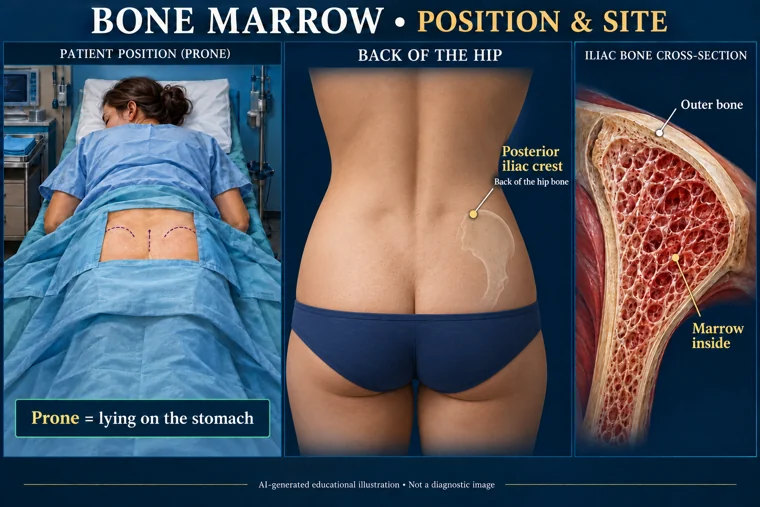
A prone, draped patient; the posterior iliac crest at the back of the hip; and a cross-section of marrow inside bone.
Prone means lying on the stomach. The posterior iliac crest is at the back of the hip bone. AI-generated educational illustration. Equipment designs and specimen requirements vary. Microscopy and scans are illustrative, not patient results.
Picture references Biopsies
Bone marrow: aspirate versus core
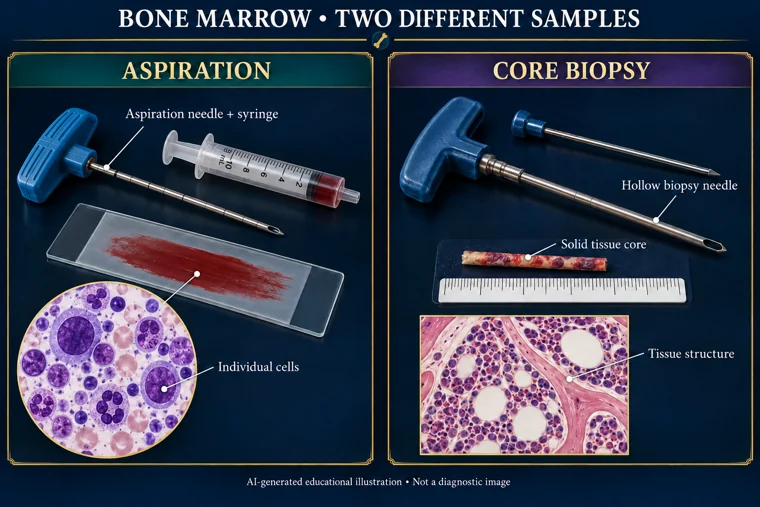
An aspiration needle and syringe collect liquid marrow; a hollow core-biopsy needle collects a small cylinder of tissue.
Aspiration provides liquid marrow for cell examination. Core biopsy preserves a small piece of tissue structure. AI-generated educational illustration. Equipment designs and specimen requirements vary. Microscopy and scans are illustrative, not patient results.
Picture references Biopsies
Bone marrow: pressure and aftercare
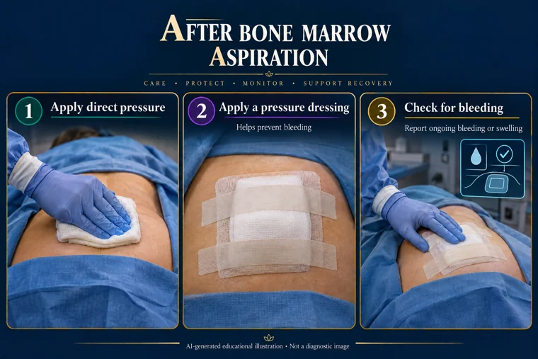
Direct pressure is applied to the posterior iliac puncture site, followed by a secured pressure dressing and monitoring for bleeding.
After aspiration, direct pressure and a pressure dressing help prevent bleeding. Check the puncture site and dressing for bleeding. AI-generated educational illustration. Equipment designs and specimen requirements vary. Microscopy and scans are illustrative, not patient results.
Picture references Blood & cultures
Blood culture and sensitivity
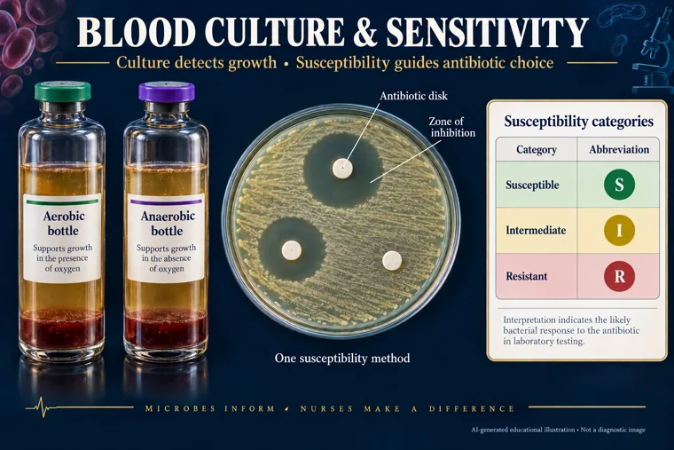
Aerobic and anaerobic blood culture bottles, an illustrative disk-diffusion susceptibility plate, and result categories.
Culture looks for microbial growth. Susceptibility testing helps determine which antibiotics may work. AI-generated educational illustration. Equipment designs and specimen requirements vary. Microscopy and scans are illustrative, not patient results.
Picture references Blood & cultures
Blood smear: cells on a slide
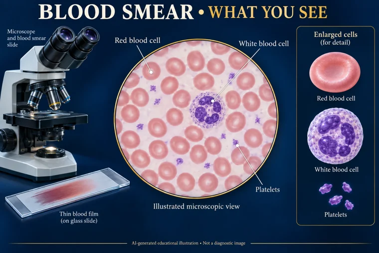
A stained blood film and an illustrative microscopic field distinguishing red cells, a white cell, and tiny platelets.
A blood smear lets the laboratory examine cell appearance. The illustrated cells are examples, not a diagnostic patient slide. AI-generated educational illustration. Equipment designs and specimen requirements vary. Microscopy and scans are illustrative, not patient results.
Picture references Blood & cultures
AFB smear versus TB culture
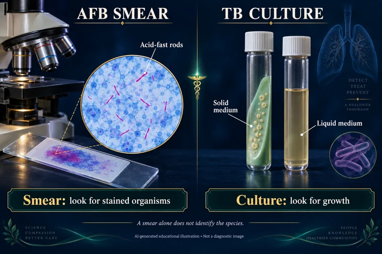
An illustrative acid-fast stained smear with pink rods and closed solid- and liquid-culture containers.
A smear shows stained organisms; culture looks for growth. An AFB smear alone does not identify the species. AI-generated educational illustration. Equipment designs and specimen requirements vary. Microscopy and scans are illustrative, not patient results.
Picture references Blood & cultures
Sputum: specimen and two lab routes
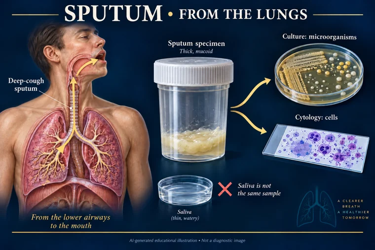
Deep-cough sputum comes from the lower airways, is collected in a specimen cup, and may be sent for culture or cytology.
Sputum comes from the lower airways, unlike saliva. Culture examines microorganisms; cytology examines cells. AI-generated educational illustration. Equipment designs and specimen requirements vary. Microscopy and scans are illustrative, not patient results.
Picture references Swabs & viral tests
Throat culture: where the swab goes
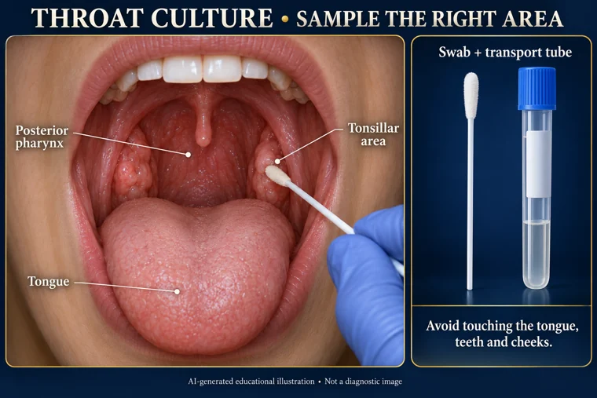
A swab samples the tonsillar area or posterior pharynx while avoiding the tongue; the sample goes into a transport tube.
The target is the tonsillar area and posterior pharynx. Swab and transport requirements depend on the ordered test. AI-generated educational illustration. Equipment designs and specimen requirements vary. Microscopy and scans are illustrative, not patient results.
Picture references Swabs & viral tests
Nasal versus nasopharyngeal swabs
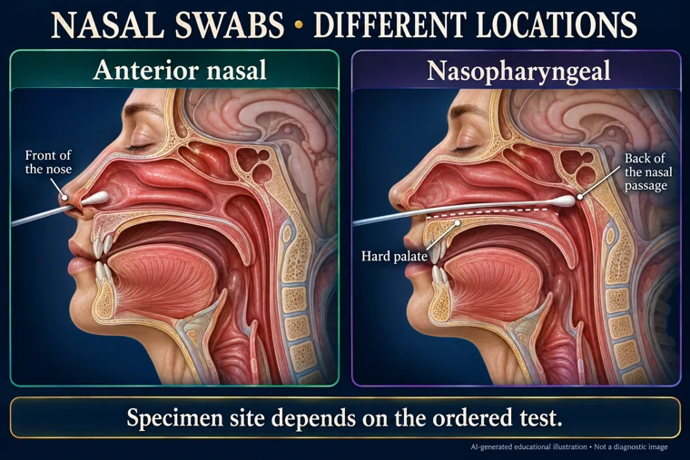
Side-by-side cutaways distinguish the front of the nose from the deeper nasopharynx along the nasal floor.
Anterior nasal and nasopharyngeal specimens come from different locations. Collection must match the ordered test and trained collection technique. AI-generated educational illustration. Equipment designs and specimen requirements vary. Microscopy and scans are illustrative, not patient results.
Picture references Swabs & viral tests
Chlamydia: common specimen options
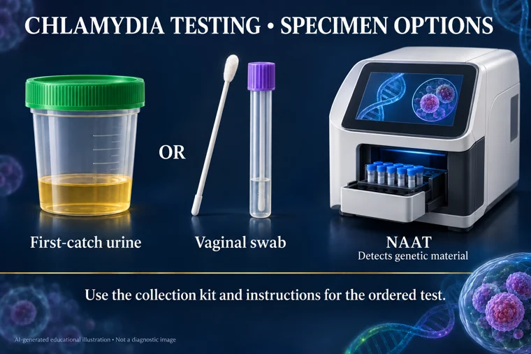
Common chlamydia NAAT specimen options include first-catch urine and a vaginal swab.
The ordered test determines the specimen and collection kit. NAAT detects genetic material from the organism. AI-generated educational illustration. Equipment designs and specimen requirements vary. Microscopy and scans are illustrative, not patient results.
Picture references Swabs & viral tests
Coronavirus testing: molecular and antigen
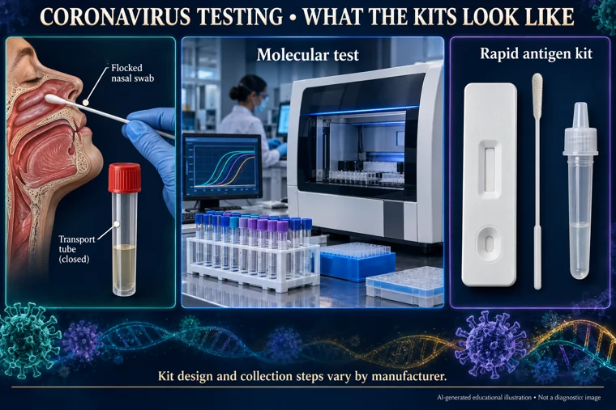
A nasal swab and transport tube, a molecular-testing analyzer, and a generic rapid antigen kit with a blank result window.
Molecular and antigen tests use different methods. The kit shown is generic; use the actual manufacturer’s instructions. AI-generated educational illustration. Equipment designs and specimen requirements vary. Microscopy and scans are illustrative, not patient results.
Picture references Biopsies
Cervical biopsy: recognize the equipment
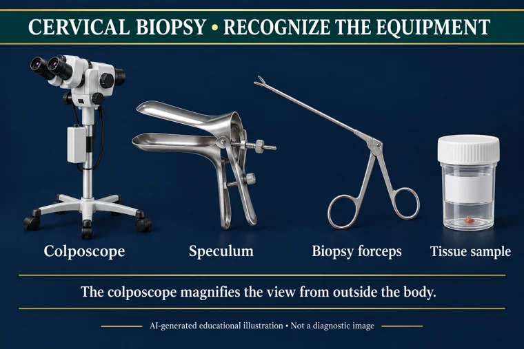
A colposcope, speculum, biopsy forceps and tissue container show the equipment used for cervical biopsy.
The colposcope stays outside the body. A biopsy removes tissue, whereas a Pap test collects surface cells. AI-generated educational illustration. Equipment designs and specimen requirements vary. Microscopy and scans are illustrative, not patient results.
Picture references Biopsies
Pap test: collection tools and cells
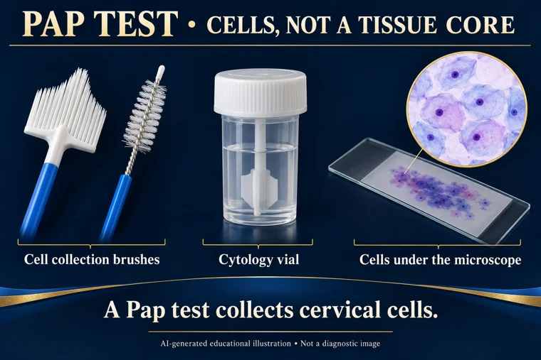
Cell collection brushes, a liquid-based cytology vial and an illustrative microscopic cell view represent a Pap test.
A Pap test collects cervical cells. A biopsy samples tissue rather than a surface-cell collection. AI-generated educational illustration. Equipment designs and specimen requirements vary. Microscopy and scans are illustrative, not patient results.
Picture references Biopsies
Endometrial biopsy: the uterine lining
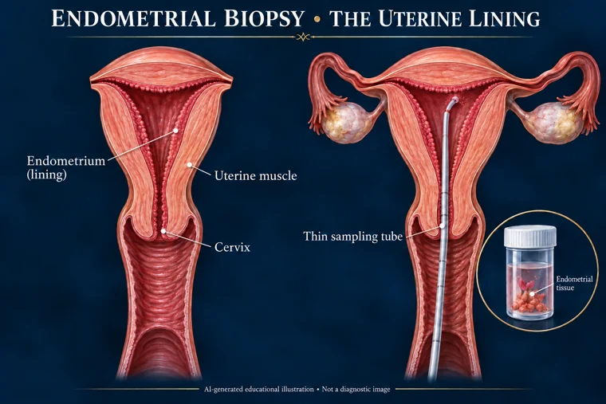
A thin sampling tube passes through the cervix to collect tissue from the endometrium, the lining of the uterus.
The endometrium is the inner lining of the uterus. The sample is lining tissue, not an ovary or a cervical cell smear. AI-generated educational illustration. Equipment designs and specimen requirements vary. Microscopy and scans are illustrative, not patient results.
Picture references Tissue & specialized tests
ER and PR: tests on breast tissue
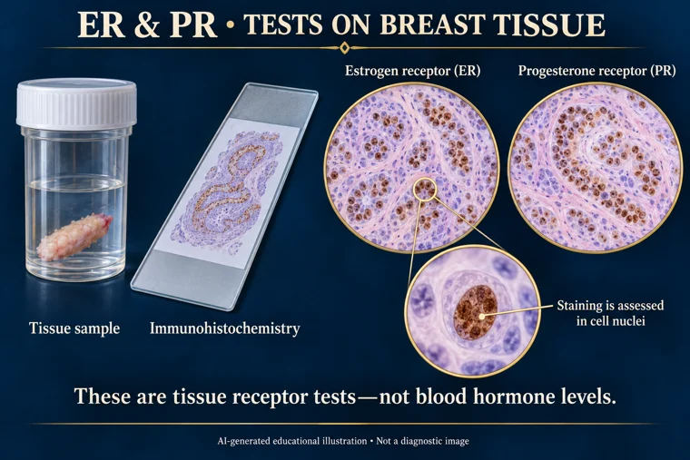
Breast tissue is examined with immunohistochemistry for estrogen and progesterone receptors, with nuclear staining illustrated schematically.
ER and PR assays test receptors in tissue. They are different from blood tests measuring hormone levels. AI-generated educational illustration. Equipment designs and specimen requirements vary. Microscopy and scans are illustrative, not patient results.
Picture references Swabs & viral tests
Herpes simplex: lesion swab and blood test
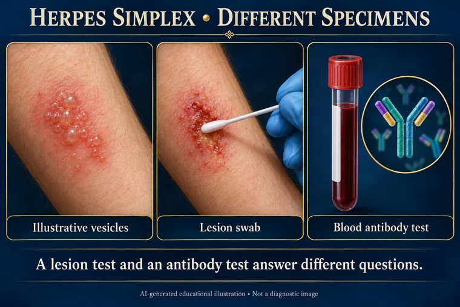
Illustrative grouped vesicles, a lesion swab, and a blood specimen for antibody testing. The appearance alone is not diagnostic.
Lesion testing samples material from the affected area. Blood antibody testing reflects an immune response and has a different role. AI-generated educational illustration. Equipment designs and specimen requirements vary. Microscopy and scans are illustrative, not patient results.
Picture references Biopsies
Liver biopsy: location and guidance
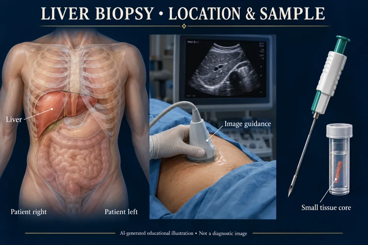
The liver sits mainly under the right ribs; imaging helps guide biopsy, which collects a small tissue core.
The liver is mainly in the right upper abdomen. Biopsy samples tissue; the approach is selected by the clinical team. AI-generated educational illustration. Equipment designs and specimen requirements vary. Microscopy and scans are illustrative, not patient results.
Picture references Biopsies
Lung biopsy: two ways to reach tissue
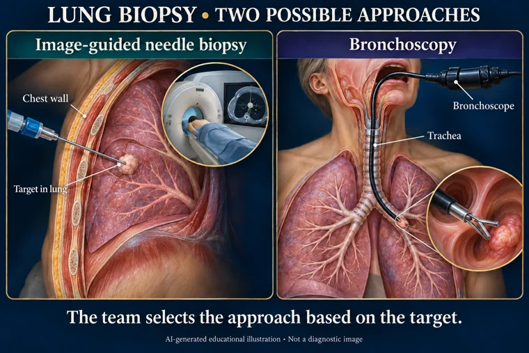
A peripheral lung target may be sampled through the chest wall with image guidance; a bronchoscope reaches the airways from inside.
Needle biopsy and bronchoscopy reach different types of targets. The clinical team selects the appropriate approach. AI-generated educational illustration. Equipment designs and specimen requirements vary. Microscopy and scans are illustrative, not patient results.
Picture references Biopsies
Pleural biopsy: lining versus lung
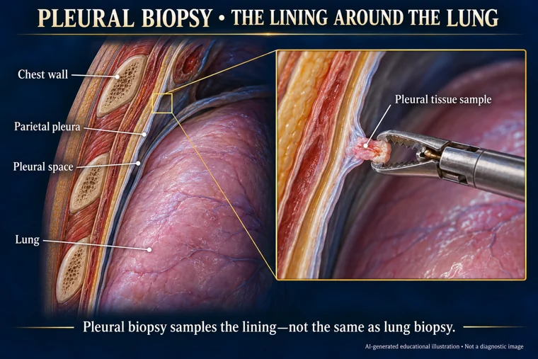
A chest-wall cutaway distinguishes the parietal pleura, narrow pleural space, and lung; a pleural biopsy samples the lining.
The pleura is the lining around the lungs and inner chest wall. Pleural tissue and lung tissue are different biopsy targets. AI-generated educational illustration. Equipment designs and specimen requirements vary. Microscopy and scans are illustrative, not patient results.
Picture references Tissue & specialized tests
Pancreatobiliary FISH: cells and probes
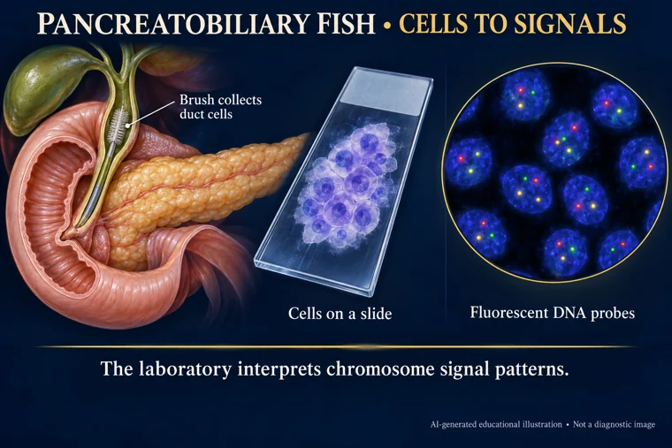
Duct brushings provide cells for fluorescent DNA-probe testing; the colored dots are schematic chromosome signals.
FISH examines chromosome signals within sampled cells. Signal patterns require laboratory interpretation. AI-generated educational illustration. Equipment designs and specimen requirements vary. Microscopy and scans are illustrative, not patient results.
Picture references Tissue & specialized tests
Parkinson evaluation: what tests look like
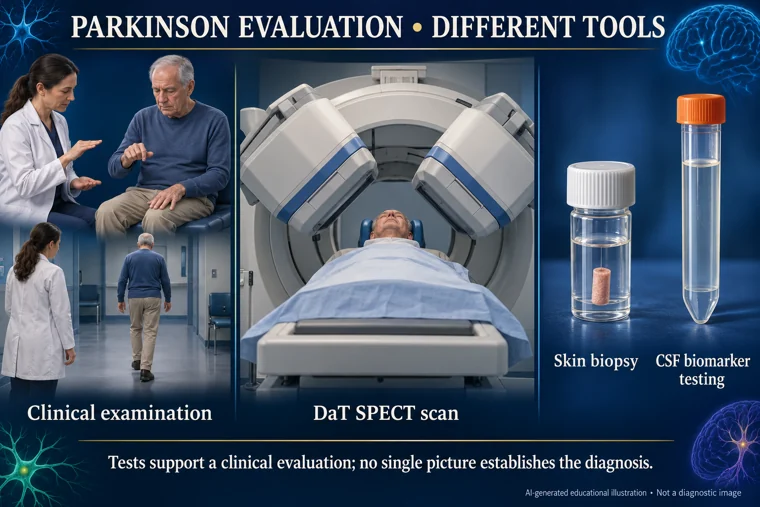
A neurological examination, SPECT camera, skin-biopsy sample, and CSF tube represent different components of a Parkinson evaluation.
Clinical examination remains central. Imaging and biomarker tests have different roles and are not interchangeable. AI-generated educational illustration. Equipment designs and specimen requirements vary. Microscopy and scans are illustrative, not patient results.
Picture references Tissue & specialized tests
Primary immunodeficiency genetic testing
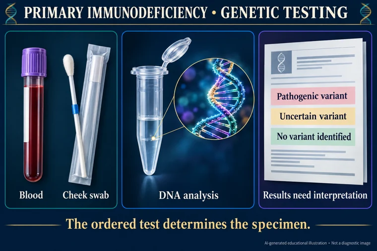
Blood or a cheek swab may provide DNA for genetic testing; a report can identify a pathogenic variant, an uncertain variant, or no identified variant.
The ordered test determines which specimen is accepted. An uncertain genetic variant does not by itself establish a diagnosis. AI-generated educational illustration. Equipment designs and specimen requirements vary. Microscopy and scans are illustrative, not patient results.
Picture references Biopsies
Renal biopsy: where the kidneys are
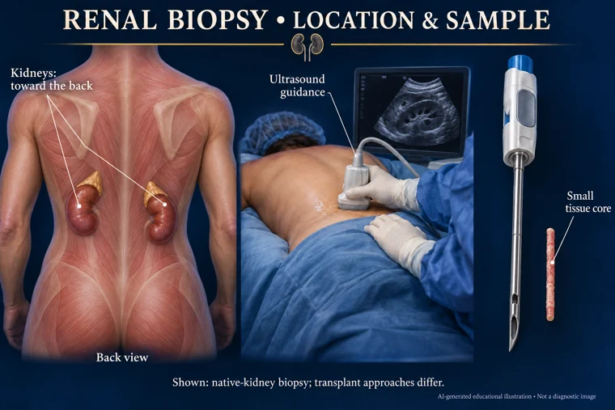
The native kidneys are toward the back of the abdomen. Ultrasound can guide biopsy, which collects a small tissue core.
The illustration shows native kidneys, not a transplanted kidney. The clinical team chooses positioning and approach. AI-generated educational illustration. Equipment designs and specimen requirements vary. Microscopy and scans are illustrative, not patient results.
Picture references Blood & cultures
Wound and soft-tissue specimens
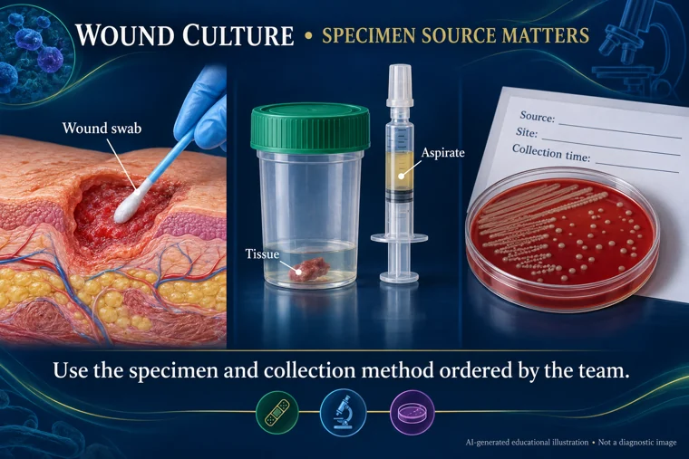
A wound swab, deeper tissue sample, aspirate, and labeled laboratory request illustrate different wound-culture specimen types.
Swabs, tissue, and aspirates are different specimen types. Record the source and use the ordered collection method. AI-generated educational illustration. Equipment designs and specimen requirements vary. Microscopy and scans are illustrative, not patient results.
Picture references Swabs & viral tests
Zika testing: specimens and methods
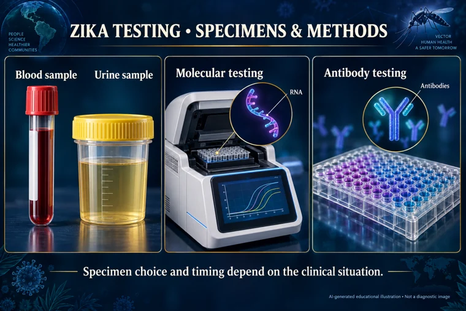
Blood and urine specimens and laboratory molecular or antibody methods illustrate Zika testing options.
The appropriate specimen and method depend on the clinical situation. These are laboratory methods, not a universal home testing kit. AI-generated educational illustration. Equipment designs and specimen requirements vary. Microscopy and scans are illustrative, not patient results.
Picture references ↑ Back to picture search